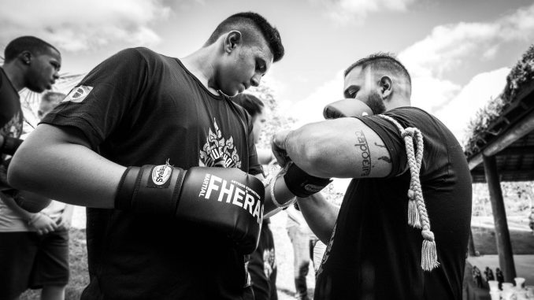
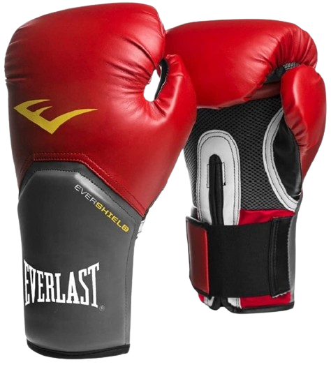
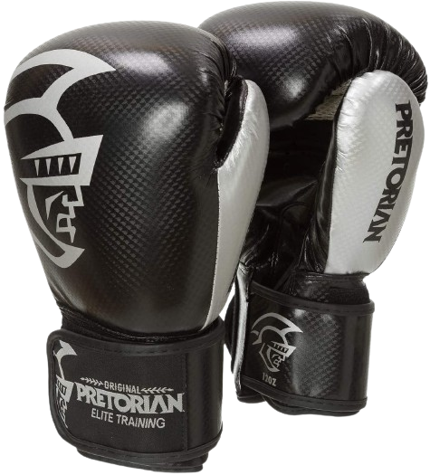
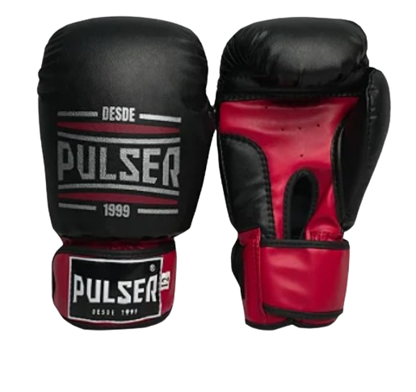
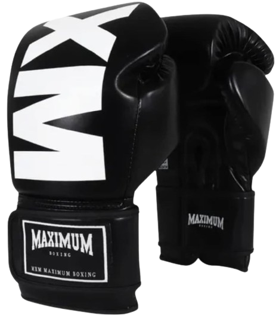
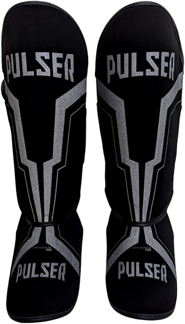
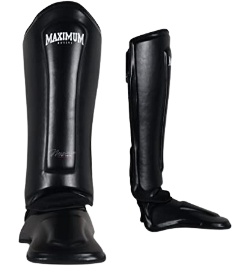

Se você está começando no mundo do Muay Thai ou já é um experiente nak muay e seus equipamentos estão clamando por uma renovação, este é o lugar certo para você. Neste artigo, vamos destacar os melhores equipamentos atualmente disponíveis no mercado, garantindo que você tenha o que há de melhor para dar o seu máximo nos treinos.
Quando você está em busca de novos equipamentos, é crucial considerar inicialmente suas expectativas em relação a eles. Enquanto alguns praticantes podem priorizar o custo-benefício, outros estão em busca da mais alta qualidade.
Você deve saber que as luvas seguem uma escala de onças para definir o seu peso e muitas vezes referida como tamanho das luvas de Muay Thai. Os pesos vão de 6 oz a 16 oz.
Aqui está uma sugestão de como escolher o tamanho adequado de luva com base no seu peso:
Confira os melhores modelos abaixo:
Esta luva de Muay Thai é praticamente um clássico moderno. Possui um ótimo custo x benefício em luvas de artes marciais atualmente. Especialmente desenvolvida para treinos diários, vai bem em sparring e bate-saco.
Tem formato anatômico e oferece um perfeito ajuste às mãos. Esta luva tem o sistema “EverCool”, que garante ventilação e tecidos especiais que permitem melhor “respiração” das mãos e o sistema “EverFresh”, que minimiza o suor e odor, resultando em maior conforto, durabilidade e contribuindo para melhor performance durante o treinamento e luta.
Esta luva de Muay Thai da Pretorian possui tecnologia HSA (high shock absorption), o que garante alta proteção e segurança.
Com espuma de alta densidade que faz o encaixe de sua mão ser perfeito e suaviza seu impacto, esta luva também traz maior liberdade de movimentos, e seu recorte em mesh garante a ventilação em suas mãos. É um dos produtos mais duráveis e de boa qualidade do mercado.
As luvas são equipamentos de proteção para as mãos e punhos durante a prática de esportes de combate, como boxe, kickboxing e muay thai. Confeccionadas em PU de alta resistência, possuem enchimento injetado, proporcionando um encaixe perfeito na mão do lutador. Para melhor ajuste, as luvas contam com fechamento em velcro, garantindo resistência, durabilidade e conforto. Elas são indicadas tanto para treinos quanto para competições, e apresentam logo serigrafado.
Para realizar a limpeza das luvas, recomenda-se o uso de um pano úmido, sabão neutro e secagem ao ar livre. Além disso, é aconselhável utilizar o spray antiodor Pulser (disponível em nossa loja virtual) para desinfetar as luvas. Evite colocar o produto na máquina de lavar, pois isso pode danificar o material.
A Luva de Boxe e Muay Thai Maximum MXM oferece conforto e precisão para aprimorar seu desempenho. Indicada para iniciantes, destaca-se pela qualidade incomparável. Feita em PU Premium, a linha Easy proporciona durabilidade superior, com duas camadas de látex e espuma de alta qualidade, garantindo um treino seguro e confortável. A tecnologia MWP protege os punhos, proporcionando um encaixe perfeito e anatômico da mão e punho, além de oferecer proteção extra para o polegar.
Detalhes adicionais incluem forro com veludo hidrofílico, que evita maus odores, velcro de alta aderência e modelagem 3D. A luva não possui filme plástico, o que contribui para a sua durabilidade e conforto. Com tecnologia exclusiva e sendo um produto importado, a Maximum MXM é uma escolha excelente para quem busca qualidade e eficiência em seus treinos.
Ao procurar as melhores caneleiras de Muay Thai, você encontrará diversas opções de acabamento e estilos de ajuste. A maioria possui acabamento frontal mais rígido, oferecendo maior proteção, enquanto algumas são mais maleáveis, dependendo da preferência pessoal. Existem caneleiras que cobrem todo o pé, semelhantes a uma luva, e aquelas que se ajustam sobre a perna e o pé com velcros e elásticos, sendo estas últimas as mais populares.
Confira os melhores modelos abaixo:
A caneleira Pulser é uma marca reconhecida no mercado das artes marciais, ideal para treinos e combates. Com 20mm de proteção e 36cm de altura na canela, oferece resistência e durabilidade. Possui ajustes com velcro na panturrilha e duplo elástico no pé, proporcionando um ajuste firme e seguro. Seu design anatômico garante maior mobilidade e conforto, enquanto o forro de veludo hidrofílico evita maus odores. A tecnologia MWP proporciona proteção adicional para os punhos, garantindo um treino seguro.
Para manter a caneleira em boas condições, recomenda-se a limpeza com pano úmido e sabão neutro, além de secagem ao ar livre. A utilização de spray antiodor Pulser é indicada para desinfetar a caneleira. Evite usar máquina de lavar para não danificar o material.
A caneleira Maximum é altamente recomendada para praticantes de Muay Thai e Kickboxing devido ao seu sistema exclusivo de proteção para pés e canelas. Desenvolvida com foco na mobilidade e segurança, a caneleira possui tecnologia de absorção de impacto e design anatômico que se ajusta perfeitamente ao corpo. Os velcros de alta qualidade garantem um ajuste firme e durabilidade, permitindo que você se mova livremente durante os treinos mais intensos. Feita em PU Flex, oferece resistência e conforto para treinos prolongados.
Além disso, a caneleira Maximum está disponível em tamanhos M, G e GG, proporcionando uma proteção extra na junção dos pés e canelas. Este equipamento é ideal tanto para iniciantes quanto para praticantes avançados que buscam uma combinação de leveza e proteção máxima. Com essas características, a caneleira Maximum se destaca como uma das melhores opções no mercado, garantindo que seus treinos sejam seguros e eficientes.
Mantenha suas bandagem sempre em dia: elas garantem a proteção de mão e punho na hora do treino e da luta. Há várias opções, e muitas delas bem acessíveis, então vale a pena ter mais de uma para poder sempre lavar entre um uso e outro!
Algumas boas opções de bandagens: